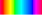

Note: This is the 2019 EuroVis version of the site, the updated version is here.
These visualizations compare how languages name the hue colors (the brightest, most saturated colors:  ).
For each language we show a stacked graph. The bottom shows our hue color bins, and the areas above are divided by color names. The hight of an area above any bin represents what percentage of numbers in that bin were given that color name. The color of each color name area is the average hue color given to that color name.